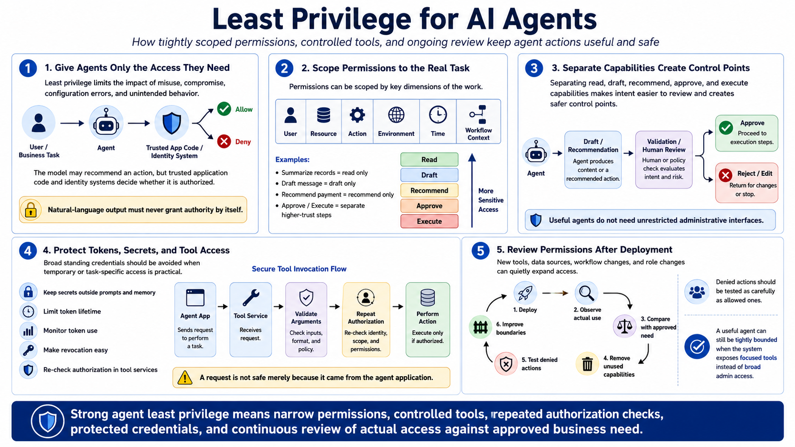

Defending Against Agent Abuse
Restricting Agent Permissions
Connecting to LMS... Progress: in progress
Version 1.0 | Date: 2026-06-21
This course provides educational information regarding defensive security controls for AI agents. It is not offensive security training, exploit development instruction, or legal advice.

Narration
Agents should receive only the permissions needed for approved business tasks. Least privilege limits the impact of misuse, compromise, configuration errors, and unintended behavior. The model may recommend an action, but trusted application code and identity systems should determine whether the agent is authorized to perform it. Natural-language output should never grant additional authority by itself.
Permissions can be scoped by user, resource, action, environment, time, and workflow context. An agent that summarizes records may need read access but not permission to edit them. An agent that drafts a message may not need authority to send it. Separating read, draft, recommend, approve, and execute capabilities creates useful control points and makes business intent easier to review.
Avoid broad standing credentials when task-specific or temporary access is practical. Protect tokens and secrets outside prompts and memory, limit their lifetime, monitor their use, and make revocation straightforward. Tool services should validate arguments and repeat authorization checks instead of trusting that a request is safe because it came from the agent application.
Permission reviews should continue after deployment. New tools, data sources, workflow changes, and role changes can quietly expand access. Teams should compare actual use with approved need, remove unused capabilities, and test denied actions as carefully as allowed ones. A useful agent can still be tightly bounded when the system exposes focused tools rather than unrestricted administrative interfaces.